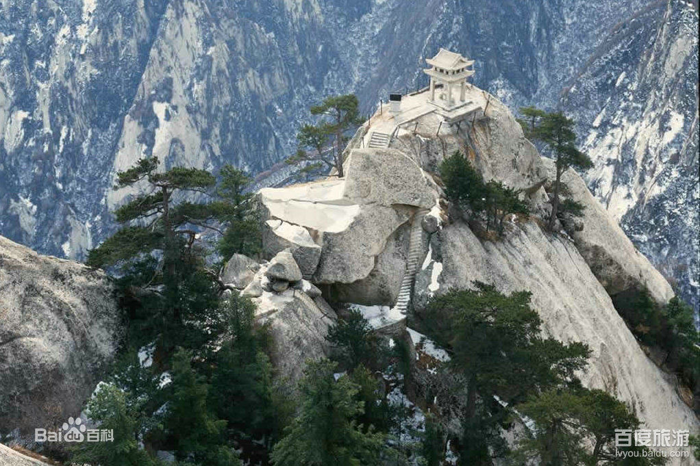
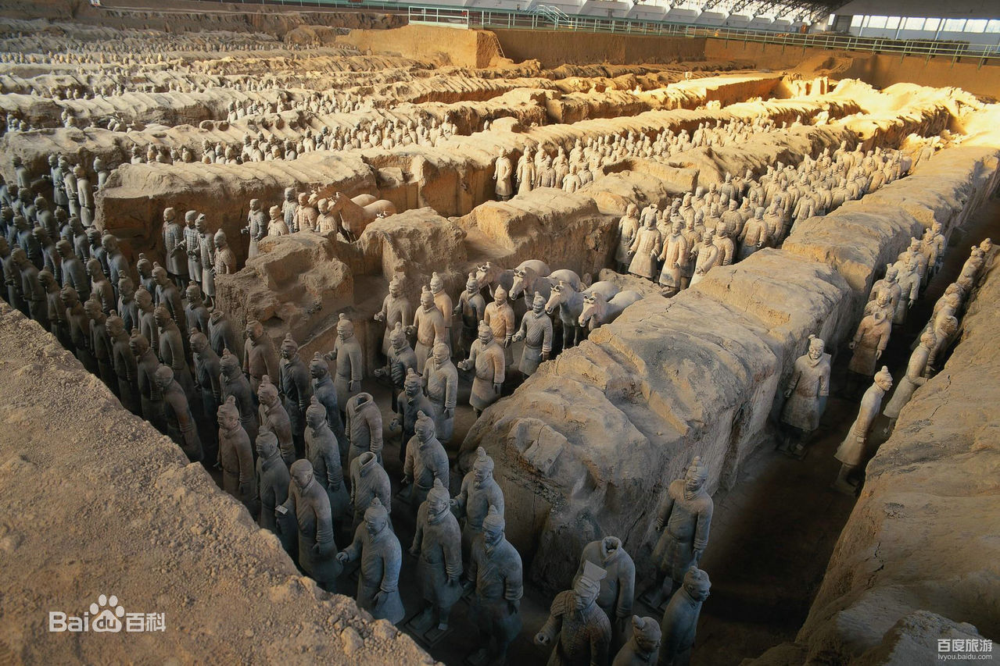
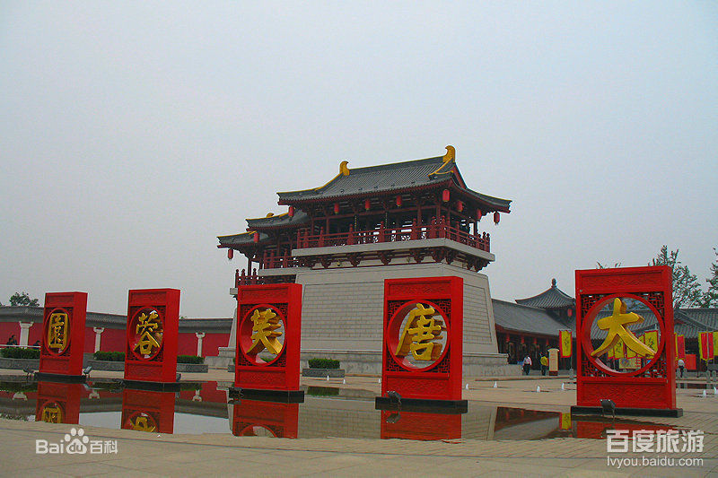
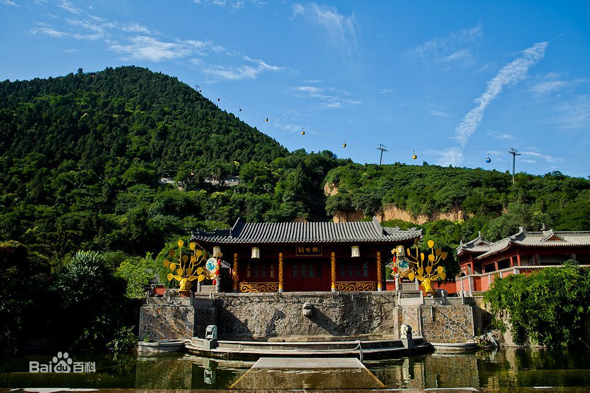
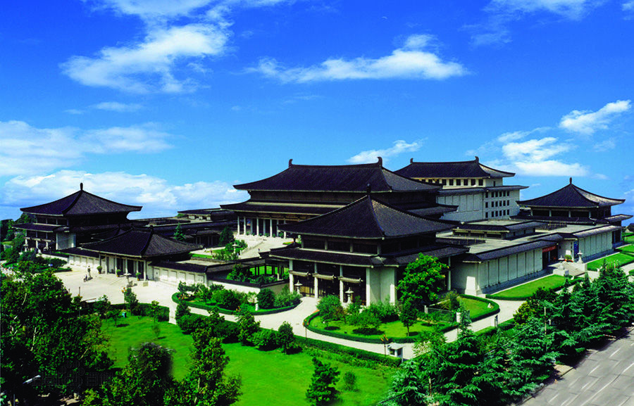
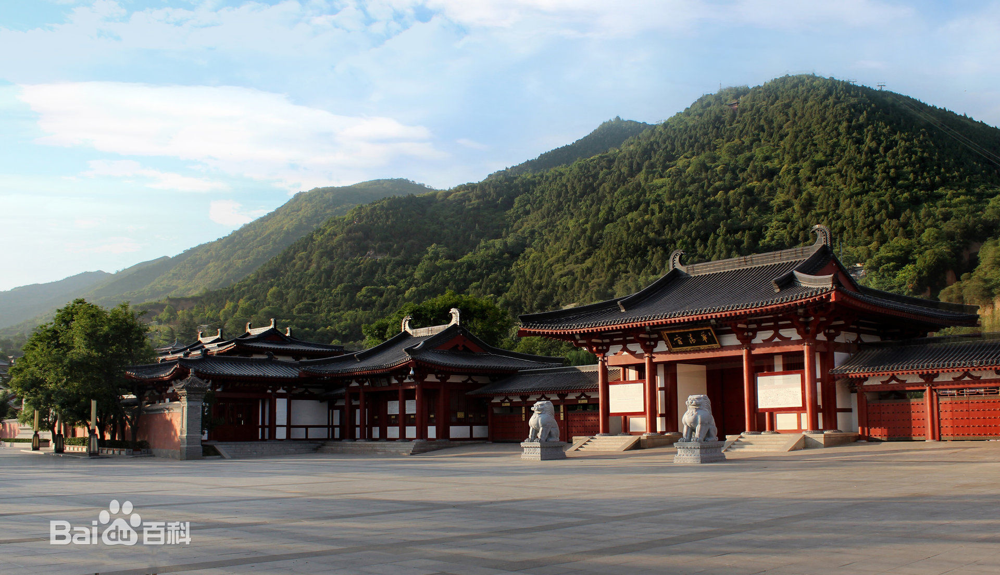

华山
9.2
地理位置：位于陕西省华阴市境内，
距西安 120 公里。
华山有东、西、南、北、中五峰，主峰有南峰“落雁”、东峰“朝阳”、西峰“莲花”，三峰鼎峙，
“势飞白云外影倒黄河里”，人称“天外三峰”。
（更多评论）

兵马俑
8.9
地理位置：位于陕西省临潼市
位于秦始皇帝陵以东1.5公里处。
秦兵马俑博物馆开放后，很快就轰动了中外，
被誉为“世界第八大奇迹”，是当代最重要的考古发现之一。
秦兵马俑以其巨大的规模，威武的场面。
(更多评论)

大唐芙蓉园
8.8
地理位置：位于古都西安大雁塔之侧，
全园景观分为十二个文化主题区域，
从帝王、诗歌、民间、饮食、女性、
大门特色等方面全方位再现了大唐盛世的灿烂文明。
(更多评论)

骊山
8.7
地理位置：位于西安临潼县城南
骊山
属秦岭山脉的
一个支脉。
最高峰九龙顶海拔
1301．9米，
山上松柏长青郁郁葱葱，
远看形似一匹
青色的骊马，
故名“骊山”。
(更多评论)

陕西历史博物馆
8.6
地理位置： 位于西安市小寨东路与翠华路的交叉路口西北侧
占地约7万平方米，
是国家级历史博物馆，也是我所展出的3000多件文物，
都是从陕西省出土的几十万件文物中精选而出，
(更多评论)

华清池
8.5
地理位置： 位于陕西省西安市临潼区
唐华清宫，是唐代封建帝王游幸的别宫。
后也称“华清池”，背山面渭，倚骊峰山势而筑，
规模宏大，建筑壮丽，楼台馆殿，遍布骊山上下。
(更多评论)